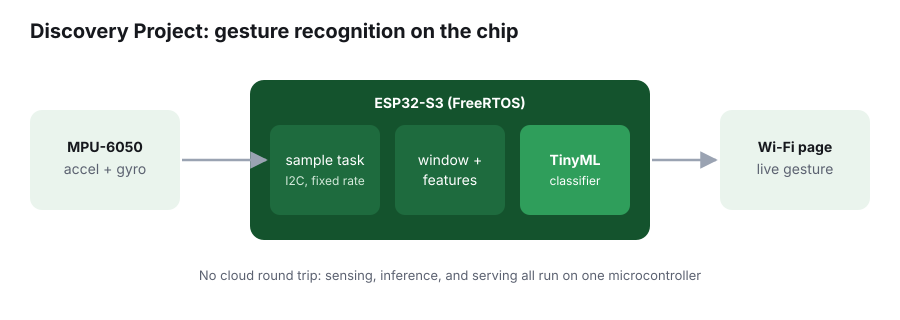

Discovery Project Feature
On-Device Gesture Recognition with an ESP32-S3
Status: in progress. Final results, photos, and a demo video will be added before the Discovery Project Showcase.

The Problem
Most AI today runs in the cloud. Your device collects data, sends it to a server, and waits for an answer. That works for a chatbot, but it breaks down for anything that has to react instantly, run on a battery, or work without internet. A wearable that recognizes a gesture shouldn't need a data center. I got interested in this after researching Qualcomm's FastConnect 7900, which runs a small AI model directly on a Wi-Fi chip to make decisions in microseconds. I wanted to find out what it actually takes to fit a useful model onto a microcontroller with a few hundred kilobytes of memory.
The Process
The system has three parts. An MPU-6050 motion sensor measures acceleration and rotation. It talks to an ESP32-S3 microcontroller over I2C, a two-wire bus I'd already debugged on flight hardware at the Small Satellite Research Lab. On the ESP32-S3, FreeRTOS runs separate tasks: one samples the sensor at a fixed rate, one slices the readings into short windows and computes features, and one runs a small neural network trained to tell gestures apart. A queue passes data between tasks so a slow step never makes the sampler miss readings.
The model is trained on a laptop from gesture recordings I collect myself, then shrunk and converted so it fits in the chip's memory. That step is the heart of TinyML: trading a little accuracy for a model small and fast enough to run on the device. Finally, the ESP32-S3 hosts a simple web page over Wi-Fi that shows the detected gesture live, so anyone on the same network can watch it work.
The Outcome
The goal is a board that recognizes a small set of gestures in real time with no cloud connection. I'll measure accuracy on held-out recordings and the time from motion to prediction. Results and photos of the hardware will be posted here before the Showcase.
What I'm Learning
This project ties together the parts of ECE I care about most: embedded C, real-time scheduling, sensor buses, and machine learning under tight resource limits. It's a small version of the edge AI problem I want to work on in my career.
Who It Helps
Gesture control matters most when a touchscreen or keyboard isn't practical: people with limited hand mobility, workers wearing gloves, or anyone controlling a device hands-free. Running the model on the chip keeps motion data private, works without internet, and responds fast enough to feel natural.
Next Steps
After the core demo works, I want to measure power draw, test how accuracy changes as the model gets smaller, and try adding new gestures without retraining from scratch.